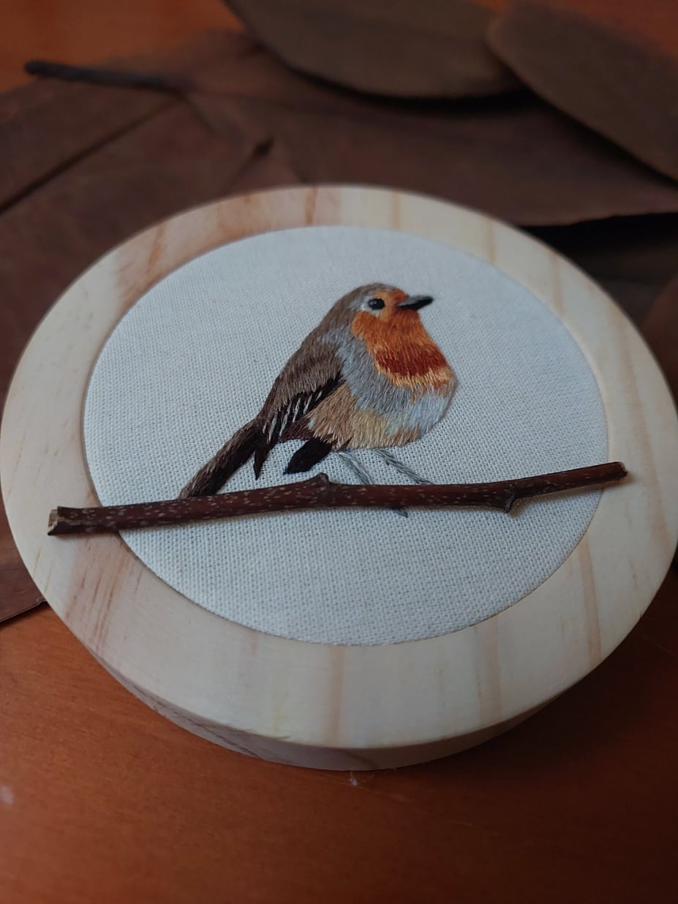
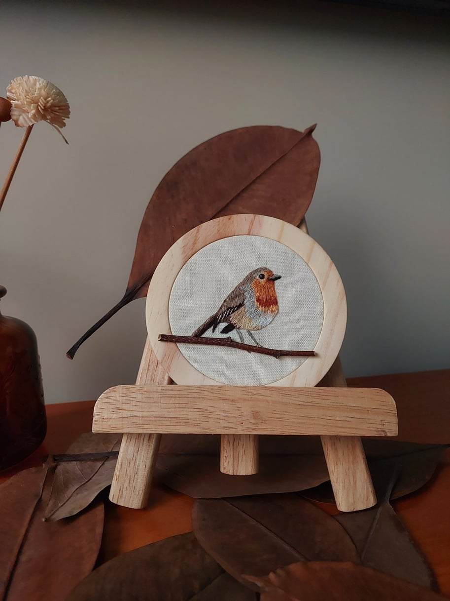
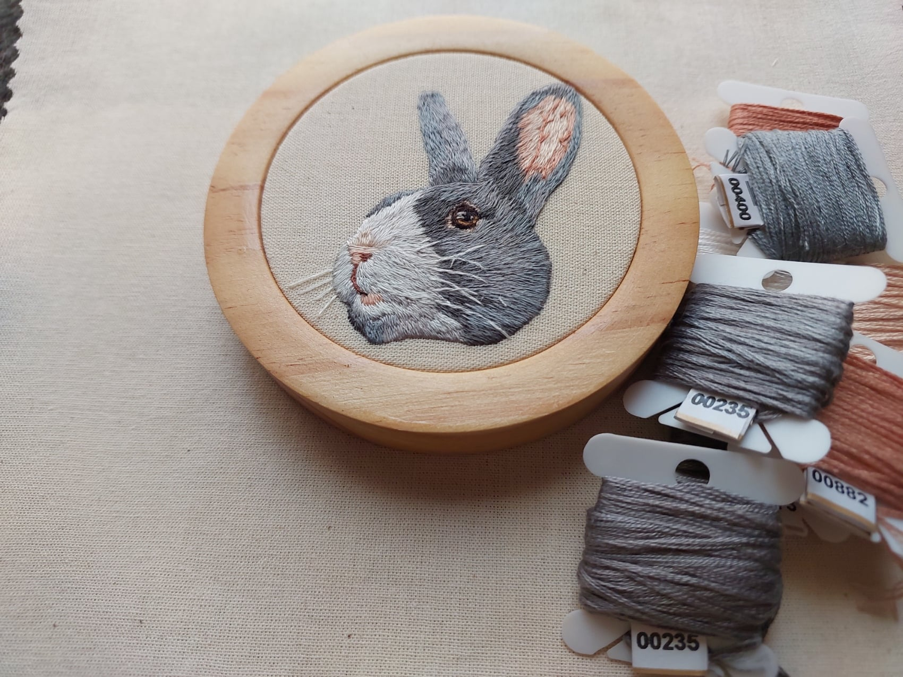
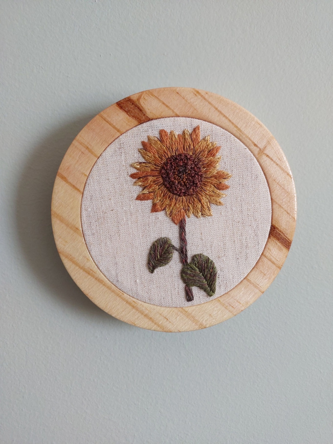
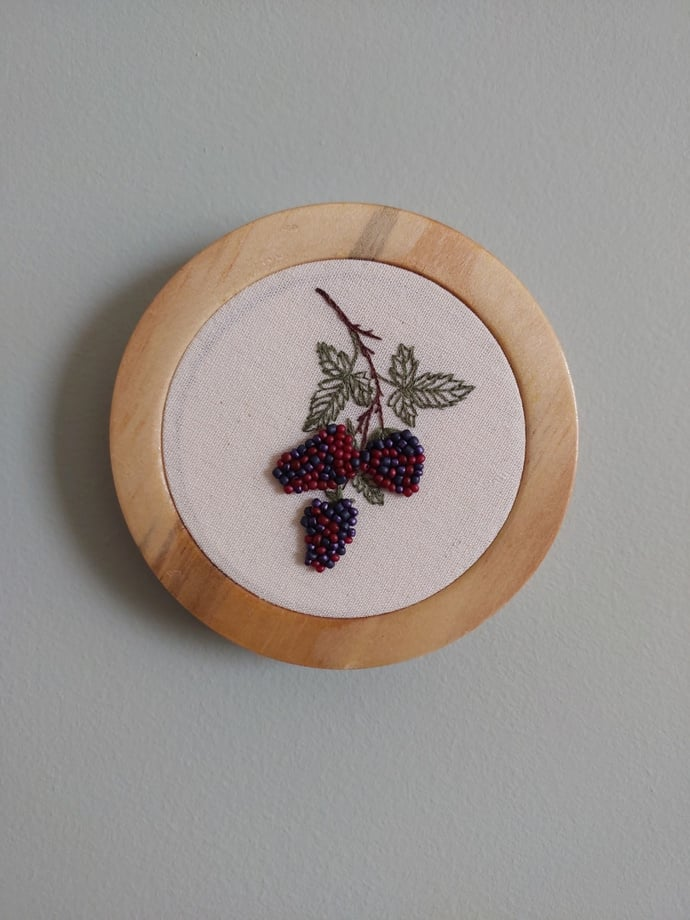
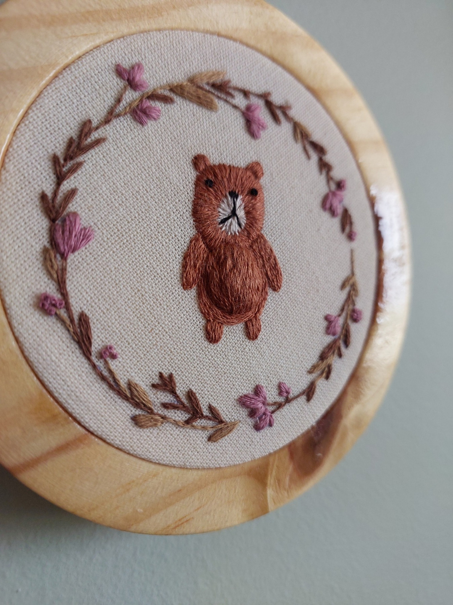
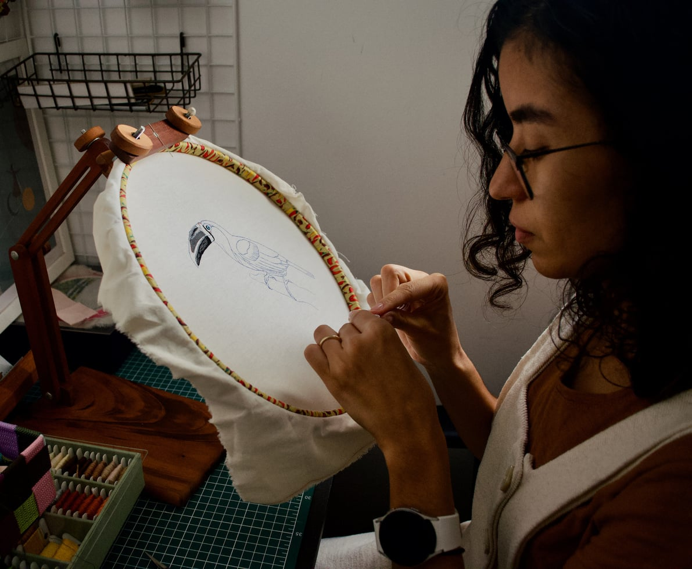
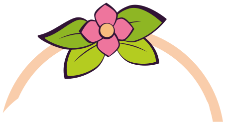

Bordados à mão & pintura em aquarela
Peças únicas, bordadas ponto a ponto — flores e animais em técnicas de realismo e 3D, com miçangas, lantejoulas, fitas e muitas cores.
trabalhos
Alguns bordados que já saíram do bastidor.






sobre

Oi, eu sou a Gabriela
Decidi criar a minha marca Estúdio Gabriela em 2022. Aprendi a bordar e a gostar de manualidades com minha mãe, que me levava junto aos cursos que fazia de bordado e pintura.
Gosto de bordar principalmente flores e animais, usando técnicas de realismo e 3D, com muitas cores e elementos diferentes, como miçangas, lantejoulas e fitas. As minhas peças expressam um pouco da minha personalidade e a paixão pelas artes.
cursos

Cursos de bordado à mão
em breveQuer aprender a bordar? Os primeiros cursos do estúdio estão em produção, do primeiro ponto às flores em 3D.
Quero ser avisadaentre em contato
Se deseja um projeto personalizado, fale comigo pelo WhatsApp ou Instagram.